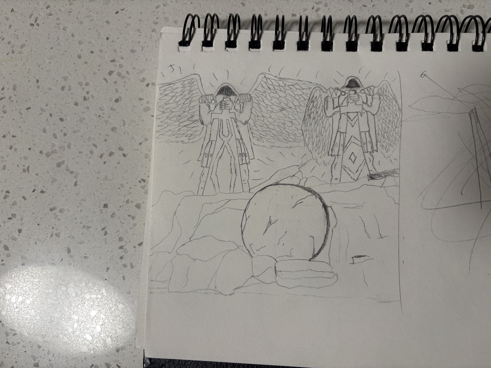
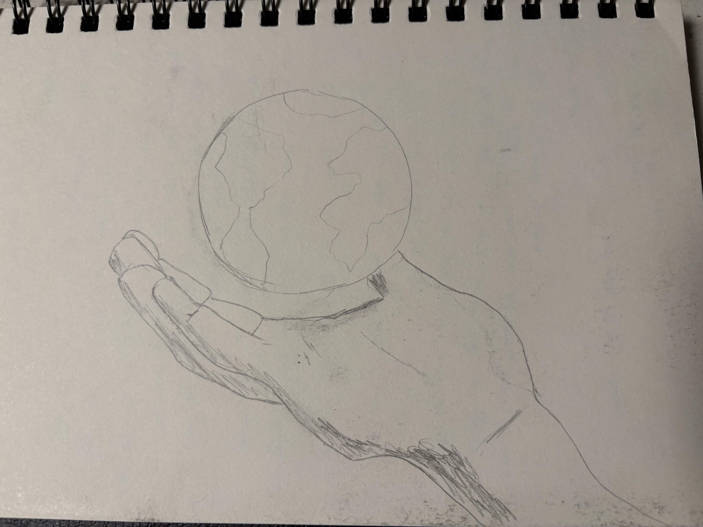

YANHENG "Yan" MA
( HE/HIM )
Instagram: @yanny_again
About the Artist
Yanheng Ma is a student at San Jose State University that loves making digital art and animations. He is someone who visualizes things from his life and past experiences on to the 2D and 3D world. Yan also a person that enjoys a variety of artistic styles from vector graphics to realism.
Love
This piece is my artist interpretation on the crucifixion of Jesus Christ. It is meant to be accurate to the Bible, but still something that I visually see in my own head and unique imagination. Nothing in this piece is not found in the Bible. I used 2D art specifically animated on after effects because I wanted to use the capabilities of motion graphics to create powerful moments and transitions that capture the eyes.


